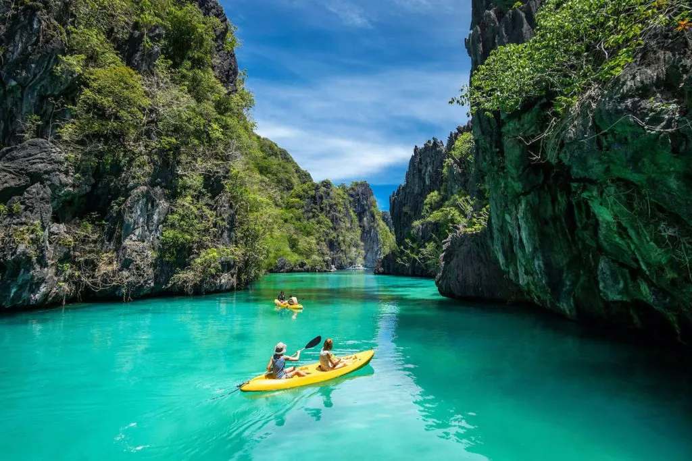
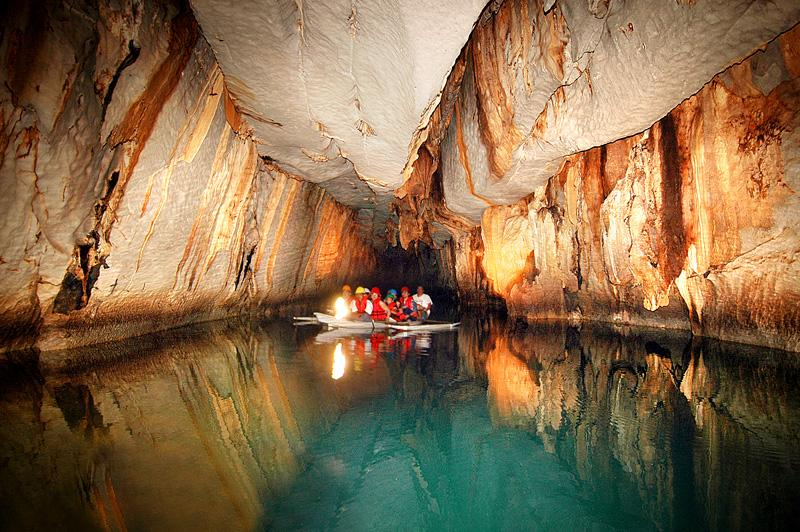

Love the Philippines · Discover Palawan
Discover Palawan
Every island, an adventure — the last frontier of the Philippines awaits.

Island · El NidoA breathtaking emerald lagoon enclosed by towering limestone cliffs — accessible only by kayak through a narrow channel.
View Details Lake · Coron
Lake · CoronDeclared the cleanest lake in Asia — crystal-clear thermocline waters inside a dramatic karst limestone bowl.
View Details
Adventure · Puerto PrincesaA UNESCO World Heritage Site and New 7 Wonder of Nature — the world's longest navigable underground river.
View Details Historical Site · Taytay
Historical Site · TaytayA 17th-century Spanish colonial fort overlooking Taytay Bay — one of Palawan's most significant historical landmarks.
View Details Beach · San Vicente
Beach · San VicenteThe longest beach in the Philippines at 14.7 km — an unspoiled stretch of white sand and turquoise sea.
View Details
Over 1,700 islands, islets, and cays — each with its own character, secret cove, and shade of turquoise.

Tubbataha Reef, Coron's WWII wrecks, and El Nido's coral gardens rank among Asia's finest dive sites.

Palawan's forests shelter unique wildlife found nowhere else on Earth, including the rare Palawan bearcat.

The indigenous Batak, Tagbanua, and Palaw'an peoples preserve traditions stretching back thousands of years.
El Nido took my breath away at every turn. The Big Lagoon is unlike anything I've ever seen — floating inside those limestone walls, I felt like I was in another world entirely.

The Underground River is genuinely one of the most awe-inspiring natural wonders I've ever visited. No photo or video does it justice. Add it to your bucket list immediately.